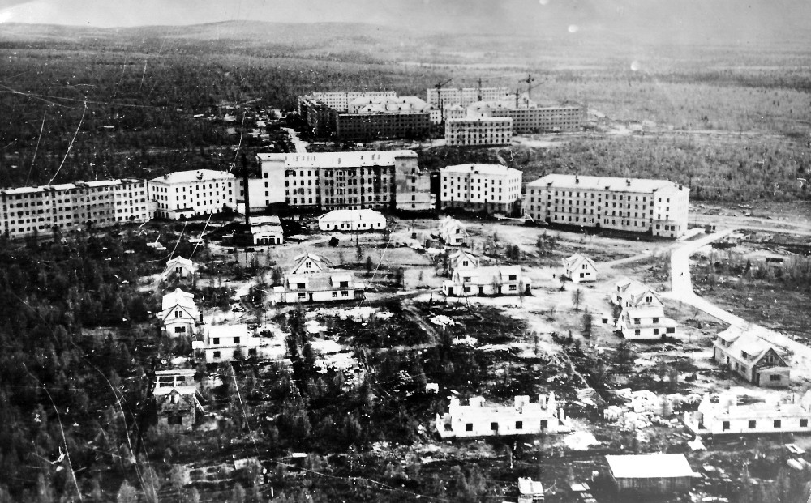

Апатиты
В 1916 году был основан как разъезд Белый (ныне железнодорожная станция Апатиты-1) в связи с началом строительства Мурманской железной дороги. В ходе Гражданской войны в России с августа 1918 года по февраль 1920 года находился под управлением Северной области. Посёлок Апатиты был образован в 1926 году и насчитывал всего 7 жителей. В 1930 году основан совхоз «Индустрия». В связи с открытием и разработкой Хибинских месторождений апатито-нефелиновых руд в 1935 году становится рабочим посёлком городского типа с включением в него посёлка совхоза «Индустрия».
Во время Великой Отечественной войны Кольский полуостров был отрезан от основной части страны, и посёлок Апатиты был ответственен за производство продуктов питания для не эвакуированных жителей Заполярья. На проведение сельскохозяйственных работ привлекалось всё трудоспособное население. Несмотря на трудности, вызванные условиями войны, большой недостаток механической силы, рабочих рук, горючего, неблагоприятные климатические условия, план посевных площадей за 1942 год выполнен на 103,3 %, а по коллективным и индивидуальным огородам в 1941 году площадь увеличилась с 28 га до 71,2 га.
Закладка города началась в 1951 году, намечен план первых одиннадцати зданий. В 1954 году начато строительство академгородка. Смерть Сталина приостановила работы по строительству города. Всё замерло вплоть до 1956 года. Только когда начались работы по строительству Кировской ГРЭС, а также проектирование АНОФ-2, строительные работы возобновились. В 1956 году был сдан первый дом. Равнинный рельеф местности позволял строить широкие, ровные и длинные улицы. Был основан строительный трест «Апатитстрой», начато строительство не только жилых домов, но и школ, учреждений культуры, детских садов. В 1961 году в Апатиты перебазирован Кольский филиал Академии наук СССР. Преобразован в город 7 июля 1966 года. Тогда же в его состав включён посёлок городского типа Молодёжный (население в 1959 году — 5980 человек). Начался город с улицы Социалистической, которая застраивались уже пятиэтажными шлакоблочными домами. Город начал расти настолько большими темпами, что пришлось менять план застройки города три раза. Изначально план рассчитывал на строительство города малоэтажной застройки населением в 30 тысяч человек. В 1976 был утверждён новый генеральный план застройки с застройкой девятиэтажными, семиэтажными, пятиэтажными домами с населением города в 100000 человек. Генплан также предусматривал дальнейшее развитие города. В начале 90-х годов из-за падения экономики СССР генплан завершить стало невозможно. Институтом ЛЕННИИП был разработан новый, который существенно расширил границы города. Этим планом были предусмотрены новые социально-культурные учреждения. Как пример, можно привести проекты спортивно-оздоровительного и культурно-торгового комплексов. Но из-за распада СССР и последовавшего за ним кризиса выполнение плана было заброшено
